Help & How-To
Short answers to "how do I…?", one task each, with the real button names. The chapters go deeper; each how-to links to the right place.
A quick map first. iPhone The top bar has the sound's name (tap it for Sounds), the photo button, Play and …, a menu with everything else. The pad's seven modes run along the bottom. iPad Mac The buttons run along the top of the window: Sounds, Save, Photo, how the photo plays, Sculpt, Pad, Edit, Help, Guide and Play. The modes sit just above the pad. This page describes RedSynth Pad 1.0.
The screen on iPhone, iPad and Mac#
When you've just opened the app and want to know what everything is.
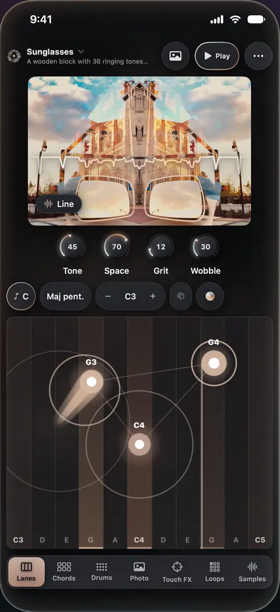
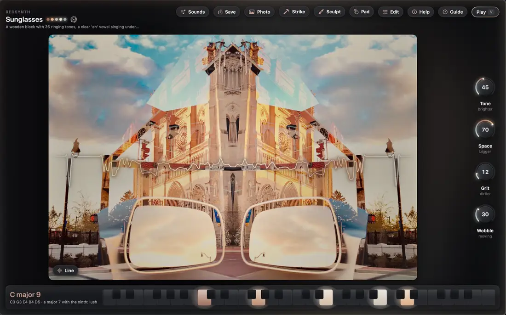
From top to bottom, every device has the same parts:
- The sound's name, five dots in your photo's colours, and one line saying what the photo became.
- The buttons. iPhone The photo button, Play and …. The … menu holds Save in My sounds…, Edit the sound, Sculpt, Plays as, Hide the pad (the keyboard), Show what each control does, The photo guide and About. iPad Mac Sounds, Save, Photo, the Scan/Strike/Space button, Sculpt, Pad, Edit, Help, Guide, Play. On a narrow window they shrink to icons.
- The photo, with the glowing line that shows what you're hearing, and the Line pill in its corner.
- The four knobs: Tone, Space, Grit, Wobble.
- The pad, with its key bar above and its modes (along the bottom on an iPhone).
- iPad Mac The strip: the keys you hold, lit, and the chord's name.
Help on any control
- Mac Rest the pointer on it. Or press Help (⌘/) and every control wears a line saying what it does.
- iPad Hold a finger still on it, or tap Help.
- iPhone Hold a finger still on it, or … › Show what each control does.
Play view
Tap Play (or press V with a keyboard) and the photo, or the space, fills the screen. Leave or Esc goes back. Everything still plays.
Related: the seven modes · iPhone, iPad and Mac: what's different · every keyboard shortcut
Your first photo#
When you want to hear a picture for the first time.
- Tap Photo. iPhone It's the photo button at the top, beside Play.
- Choose a picture. On iPhone and iPad the system's photo picker opens, and the app sees only the photo you pick. Mac A file window opens, or drag a photo from Finder onto the window.
- Watch the breakdown: for twenty seconds the photo is taken apart on screen while you hear it form. A tap skips it.
- Play the pad. The new sound is named after your photo and kept under Your photos in Sounds.

Photos that work well
- Bells and plates: a regular pattern. Fences, bricks, waves, fabric.
- Soft pads: smooth pictures. Sky, fog, water.
- Bright, buzzy sounds: busy pictures. Leaves, a crowd, text.
- A strong vowel: one clear colour.
Related: what the breakdown shows · how a photo becomes a sound · getting back to a photo
The seven modes#
When you're not sure which way to play the pad.
The mode bar switches the pad. Pick by what you want to do:
- Lanes: single notes in columns. A melody or a bass line. How
- Chords: a whole chord under each finger. How
- Drums: sixteen pads of a synthesized kit. How
- Photo: the photo itself is the pad. How
- Touch FX: an effect under your finger, over something else playing. How
- Loops: a grid of loops that start on the next bar. How
- Samples: sixteen pads of sounds you recorded or imported. How

Related: Which mode do I use? (with a picture of each)
The four knobs#
When you want to change the sound quickly, without opening every control.
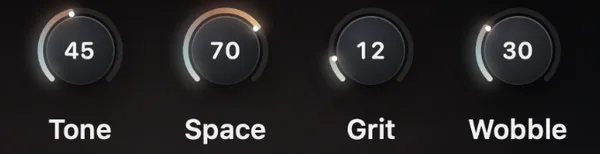
- Tone: up is brighter, down is darker and softer.
- Space: echoes and reverb, wider and further away.
- Grit: drive, distortion and crunch.
- Wobble: shimmer, sway and wobble.
Drag a knob up or down while you hold a note. Double-tap it (double-click on a Mac) to put it back.
Related: what moves inside each knob · every control: Edit
Play a melody: Lanes#
When you want single notes: a tune, a bass line, a solo.
- Choose Lanes in the mode bar. The pad becomes columns of your key's notes, low on the left. The home note's lanes are lit and named.
- Touch a lane to play its note. Several fingers make a chord, and the strip names it.
- Slide up in a lane: the note gets brighter. Slide sideways: step to the next lane, or bend into it.
- Press harder while you hold: the note swells.
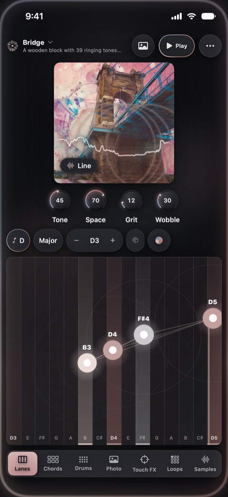
Related: Lanes in the chapter · how hard a note plays
Play chords#
When you want harmony without knowing chord shapes.
- Choose Chords. Every cell is a whole chord from your key: three-note chords on top, richer seventh chords underneath. The home chord is tinted.
- Touch a cell: the chord plays, through your photo.
- Drag across a cell to strum it.
- Slide into the next cell: the notes the two chords share keep ringing, and only the others change.
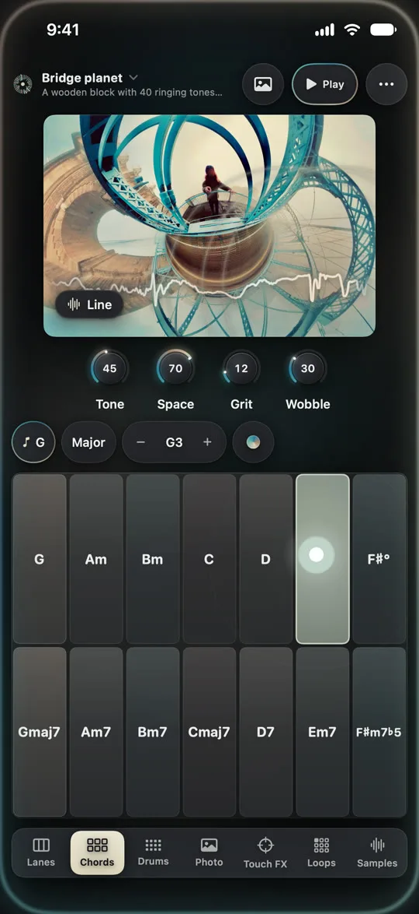
Related: Chords from a photo (a recipe) · key and scale
Play the drums#
When you want a beat, or to record a drum loop.

- Choose Drums. Sixteen pads appear, the kick (Boom) at the bottom left.
- Tap a pad. Touch higher on a pad to hit it harder.
- The kit is nine drums made from scratch, no recordings: Boom, Long Boom, Snap, Clap, Tick, Tss, Tom, Bell and Rim.
Related: record a beat · each drum's own controls (Edit › Drums)
Play the picture: Photo mode#
When you've just added a photo and want to explore it with your fingers.
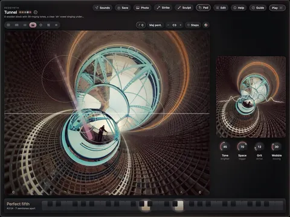
- Choose Photo in the mode bar.
- Left to right is the note, in your key. Up and down is the part of the photo you hear: the line follows your finger.
- Hold a note and slide slowly up through a busy part of the picture.
Related: Photo mode in the chapter · make the line move by itself
Effects under a finger: Touch FX#
When something else is playing (a keyboard, a loop) and you want to bend it live.
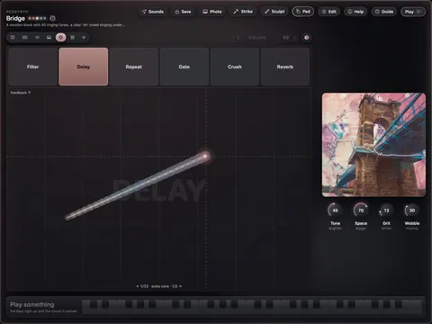
- Choose Touch FX.
- Pick an effect: Filter, Delay, Repeat, Gate, Crush or Reverb.
- Play notes another way (a MIDI keyboard, a loop, your other hand) and touch the pad. The effect is on only while your finger is down. Lift, and it eases out.
| Effect | Left to right | Up and down |
|---|---|---|
| Filter | Left of the middle muffles; right of it thins | How sharp the edge is |
| Delay | The echo's length, in notes of the tempo | How many echoes |
| Repeat | How long a slice gets caught and looped | Bends the slice's pitch |
| Gate | How fast the sound is chopped | How deep the chop goes |
| Crush | Lower sample rate | Fewer bits |
| Reverb | The room's size | How loud the room is |
Related: Touch FX while you play keys (a recipe) · the chapter
Move the line: patterns and direction#
When you want the sound to travel through the photo by itself, or read it a different way.

- Make sure the photo plays as Scan: the line only changes the sound there. A new photo starts as Strike, so the panel offers Switch to Scan. Tap it.
- Tap the Line pill in the photo's bottom-left corner. The panel, The line, opens (from the bottom on an iPhone).
- Pick a move: Hold, Sweep, Bounce, Fall, Rise, Jump, Random or Drift. The pill now says it, for example Line: Sweep.
- Set the speed: Free (a slider; the panel says how long one lap takes) or To the beat (a lap is a note length at the tempo).
- Set How much of the photo the line covers.
- Under Which way, choose Down (rows), Across (columns) or Slant (corner to corner).
Related: Make the line move (a recipe) · every move explained · which way the line runs
Key, scale and octave#
When you want every note on the pad to fit, or to play higher or lower.
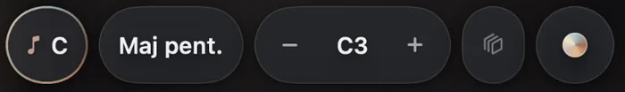
- The note name (here C) sets the home note.
- The scale: Chromatic, Major, Natural minor, Major pentatonic, Minor pentatonic, Blues or Dorian. On an iPhone its name is shortened (Maj pent.).
- − and + move the octave at the pad's left edge.
- Steps or Glide: whether sliding sideways lands on the next note or bends smoothly into it. On an iPhone it's an icon.
- The coloured dot opens Pad colours.
Related: the key in the chapter · chords from the key
Change the pad's colours#
When you want the pad's light to look a certain way. It never changes the sound.
- Tap the coloured dot at the end of the key bar. Pad colours opens.
- Pick a scheme: Photo (the photo's own colours, the default), One colour, Gradient (low notes to high, two colours you pick), or a ready-made look: Mono, Amber, Phosphor, Ice, Brass, Signal.
- Glow sets how bright the lights are; Trail, how long a finger's trail lasts.
- Usual glow and trail puts both back.
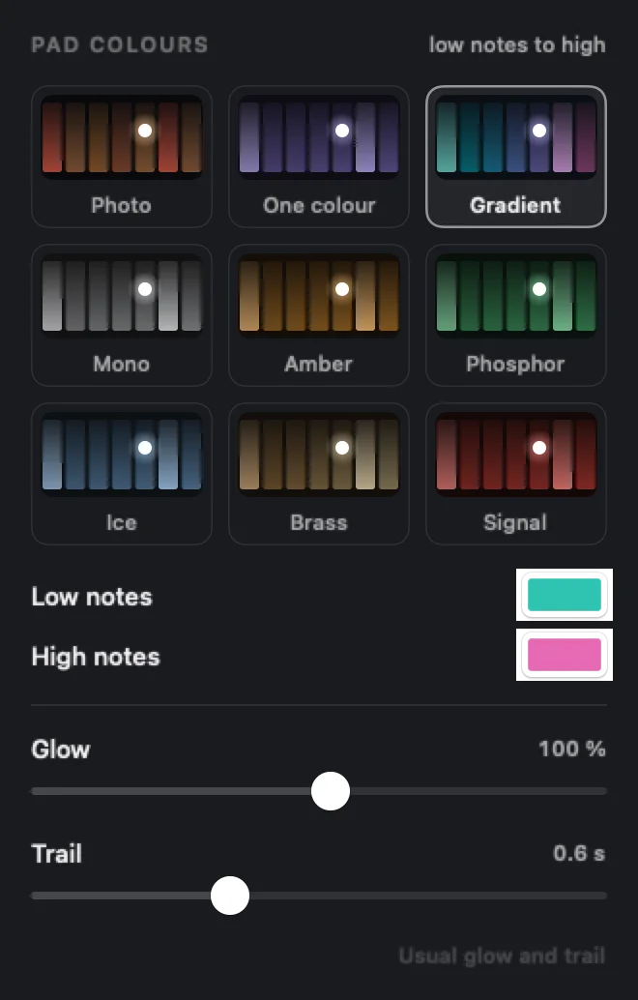
Related: every scheme · the photo's light
Fingers, Pencil and the Mac trackpad#
When you want to play softer or harder, or to play on a Mac.
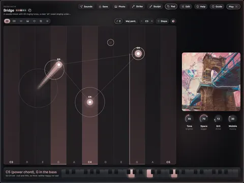
iPhone iPad The screen
- Up to ten fingers at once.
- How hard a note plays comes from how much fingertip lands: a light fingertip is a soft note, a firm, flat landing is louder.
- iPad An Apple Pencil plays by its force; pushing harder while you hold swells the note.
Mac The trackpad
- Rest the pointer over the pad. The Mac sends trackpad touches to whatever is under the pointer.
- Better: press Hold the pointer (⌘⇧T). The pointer stays put while you play with several fingers. Esc frees it.
- How hard comes from where on the pad your finger lands; on a Force Touch trackpad, pressing deeper swells the note.
Related: where your fingers come from · the trackpad doesn't play
MIDI keyboards and on-screen keys#
When you'd rather play keys than the pad.
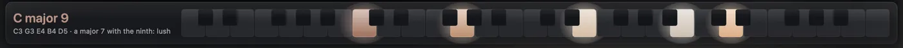
A MIDI keyboard
- Plug in a USB keyboard. There's nothing to set up in the app: any controller your device sees just plays.
- Keys play the sound; how hard you hit sets loudness and brightness. The pitch wheel bends, the mod wheel opens the filter, a sustain pedal holds notes.
- Channel 10 plays the drum kit. Channel 11, notes 36 to 51, plays the sixteen sample slots.
The on-screen keyboard
Pad (⌘⇧K) swaps the pad for an on-screen keyboard and back. iPhone … › Hide the pad (the keyboard).
Related: what each part of a controller does · Touch FX with keys
How the photo plays: Scan, Strike or Space#
When the photo doesn't sound the way you expected, or you want a different instrument from it.
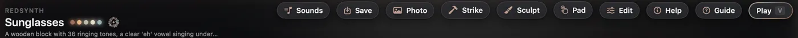
- Open the button that reads Scan, Strike or Space. iPhone … › Plays as.
- Choose one. Each says in one line what it does:
- Scan: a line reads the photo as a wave. The line and the synth's controls shape it.
- Strike: the photo is an object you hit; it rings, and sings while you hold. Every new photo starts here.
- Space: two or three photos make a block you strike, with a loop flying through it. It's listed once a second photo is in.
- Under Strike, the same menu has Strike it as: Ringing object, Plucked string, Ladder bass or Clean lead. Choosing one replays part of the breakdown with that instrument.
Related: how each one reads the photo · one photo, four instruments · the line under Scan
Make a space from two or three photos#
When you want a sound that moves: a room built from your photos.
- Add a photo the usual way. That's the front.
- Tap Photo again (on an iPhone, the photo button). It's a menu now. Choose Add a second photo: the side.
- The line says Making the space… for a few seconds. Then the photos fly to their walls, a cloud forms and a loop draws itself. A touch skips it.
- For a third photo, the view from above, choose Add a third photo from the same menu.
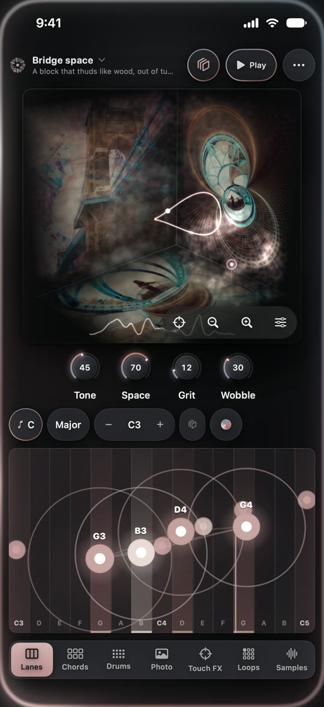
Related: turn and play it · Stack three photos (a recipe) · how a space works
Turn and play a space#
When a space is in and you want to move through it.
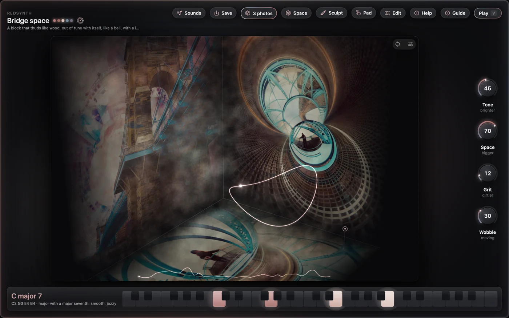
| You do | It does |
|---|---|
| Drag empty space | Turns the room. Let go and it coasts. |
| Pinch, or scroll | Comes closer or backs away. |
| Drag the loop | Moves it through the block. The tone changes as it goes. |
| Drag the loop's bead | Makes the loop bigger or smaller. |
| Drag the mallet | Moves where the strike lands. Double-tap puts it back. |
| Tap the cloud | Strikes it right there. |
| Press harder | Pushes the loop deeper, into the second photo. |
The space's controls
The slider button on the space opens Size, Body, Drift, Tilt, Depth and Shape (Ring, Circle, Eight, Knot), plus Mist, Stars and Form, which only change how the cloud is drawn.
Related: playing it with your hand · each control · sculpt the block
Give a photo a filter#
When you want a different instrument from the same photo.
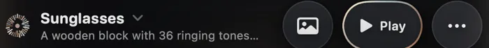
- Open the Photo menu (on an iPhone, the photo button).
- Choose Filter. In a space it lists First photo, Second photo and Third photo, each with a filter of its own.
- Pick one: Original, Cartoon, Sketch, Dream, Spectrum or Thermal. Each says in a line what you'll hear. The photo is shown the way it is played.
Related: what each filter does to the sound
Your photos: go back to one#
When you played a built-in sound, or a newer photo, and want an earlier photo sound back.
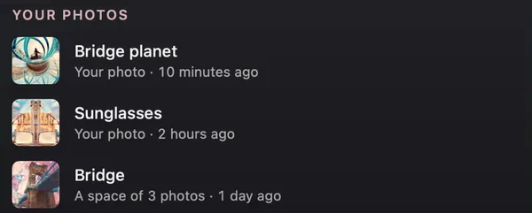
- Open Sounds (on an iPhone, tap the sound's name).
- Under Your photos, tap the one you want. It comes back as you left it: its knobs, its line, its sculpt.
- The list shows the newest few. All your photos opens the rest.
Related: your photo sounds · My sounds
Find a sound in the library#
When you want a ready-made sound, with or without a photo.
- Open Sounds (on an iPhone, tap the sound's name). Mac It opens beside the button. iPhone iPad It slides up from the bottom.
- Under Library, tap a group: Pad, Pluck, Lead, Keys, Bass, Wild, Texture or Photo. Each sound has a line saying what it is.
- Or type in the search field. It finds sounds by name, words or group, your own included.
- All sounds takes you back to the groups.
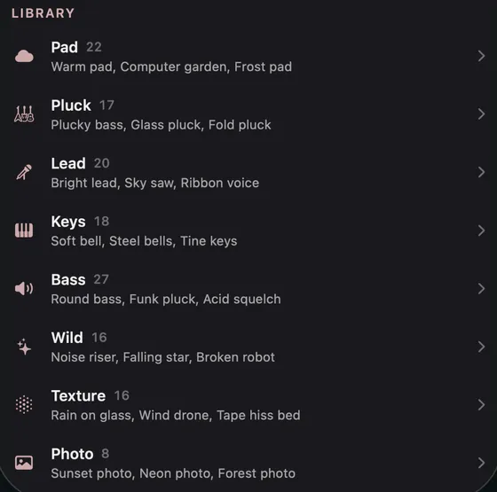
Related: a few to try in each group · save your own
Save a sound in My sounds#
When you like what you hear and want it by name next time.
- Tap Save. iPhone … › Save in My sounds… Mac Sound › Save Sound… or ⌘S.
- Save this sound opens. Change the Name if you like, and choose where it Goes under (a photo sound goes under Photo).
- Tap Save to My sounds. It keeps exactly what you hear: every knob, the photos, the sculpt.

Changed it later?
A saved sound you change shows Edited by its name. Open Save again: Save keeps the changes, Save as new keeps both.
Related: send it to a friend · My sounds in the chapter
Send a sound, open one you were sent#
When a friend should hear exactly what you made, or you want a sound on your other device.
Send
- Open Save and tap Send this sound…. Or, in Sounds, a saved sound's ⋯ › Send….
- Choose AirDrop, Messages, Mail or Files. It's one file, named after the sound, ending in
.redsynth.
Open
- iPhone iPad Tap the file. It opens in RedSynth Pad.
- Mac Double-click it, or drop it onto the RedSynth Pad window.
- The sound is added to My sounds and plays.
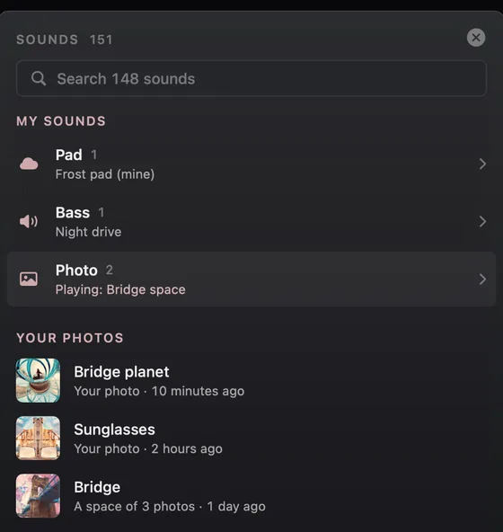
Related: Save and send (a recipe) · where things are kept
Every knob: Edit#
When the four knobs aren't enough and you want the whole synthesizer.
- Open Edit. iPhone … › Edit the sound: a sheet under the pad, which still plays; drag it up for the full height. iPad Edit: a panel beside the instrument. Mac Edit, Sound › Edit Sound or ⌘E: a window of its own.
- Pick a page: Sound, Motion, Effects, Photo, Drums, Setup. On an iPhone the pages are icons.
- Or type in the search field (cutoff, delay, attack…). It looks through every page.
- Drag a knob up or down. Double-tap it (double-click on a Mac) to put it back.
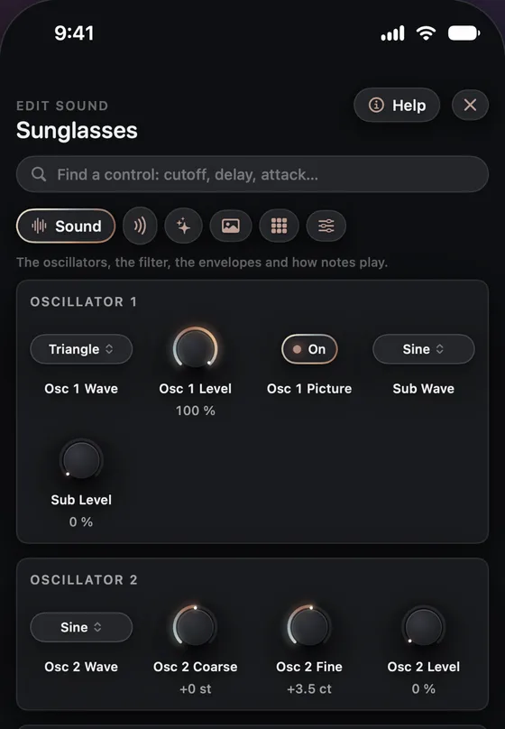
Related: every control in one line · how the sound is made · every knob, with its range · synth basics, with sounds
Sculpt one photo#
When you want to change a photo sound by hand, with a brush.
- With one photo in, tap Sculpt (the brush). iPhone … › Sculpt.
- Pick a tool and paint on the photo. Hold a note while you paint to hear each stroke.
- Paint lays a colour. Enough of one colour moves the vowel.
- Ripple lays stripes: a new ringing tone. Apart sets how close (closer is higher); Turn, which way they run.
- Smooth blurs: a softer mallet. Restore brings the photo back under the brush.
- Watch the lines at the bottom: the object's tones. A ripple adds one.
- Tap Done and play.
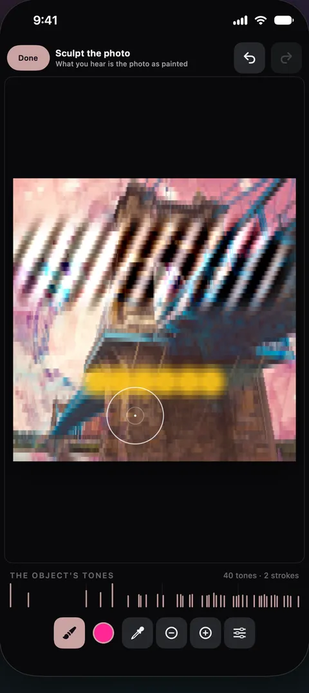
Related: Sculpt the sound by hand (a recipe) · every brush and tool
Sculpt a space#
When a space is in and you want to change what its block is made of.

- With two or three photos in, tap Sculpt. The cloud is the block: bright is light matter, dark is heavy.
- Pick a material: Lead (heavy and soft: tones fall), Crystal (light and stiff: tones rise), or Iron, Wood or Air between.
- Paint on the block. While the brush is down the tones are a good estimate; when it lifts, they're worked out exactly, which takes about a second on an M4 Mac.
- Turn the block with two fingers, with Turn, or (on a Mac) Option and a drag. Pinch, or ⌘ and scroll, to zoom.
- Show changes what brightness means: Light, Weight, Stiff or Touched (only your strokes).
Related: Sculpt in full · turning a space
Record a beat#
When you want a drum loop going round while you play over it.

- Make a drum loop first. Choose Loops, open the Loop Editor (on an iPhone, the sliders icon above the pad; on a Mac, ⌘L), tap New and under Drums choose 1 bar or 2 bars. Tap Done.
- Press record, the circle beside play. If nothing was playing, a count-in clicks first (it isn't recorded).
- Switch to Drums and play. Each time the bar comes round, what you play is added on top.
- Go back to Loops and press record again to end the take. The clock keeps running.
- Put it on the grid: open the Loop Editor, tap Assign to a cell (on an iPhone, Cell), pick an empty column, then Done. Tap that cell: it starts on the next bar.
Related: Record a beat and play over it (every step, with what you'll see) · launching loops
Record a melody loop#
When you want a chord part or a bass line to repeat under you.
- Choose Loops. To record into a fresh loop, open the Loop Editor and tap New › under Notes, a length (1 to 8 bars). Tap Done.
- Press record. Mac Play › Record a Loop (⌘⇧R) works from any mode.
- Switch to Lanes, Chords or Photo and play. The on-screen keys and a MIDI keyboard go in too. Recording carries on while you switch modes.
- Go back to Loops and press record again to end the take.
- Open the Loop Editor, tap Assign to a cell, pick a column, Done, and tap the cell.
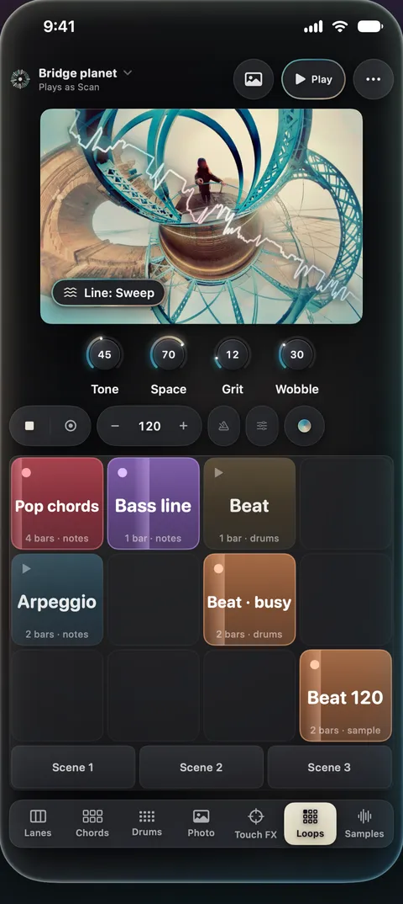
Related: fix the notes afterwards · loops in the chapter
Launch loops and scenes#
When you have loops on the grid and want to perform with them.

- Choose Loops.
- Tap a cell: it starts at the next bar line. Its ring fills while it waits.
- Tap it again: it stops at the bar line.
- The strip at the bottom (Scene 1, Scene 2, Scene 3) launches a whole row at once.
Related: the transport and scenes · record a beat
Fix notes in the Loop Editor#
When a recorded loop has a wrong note, sits off the beat, or should be longer.

- Tap empty space to draw a note. Drag a note to move it; drag its right edge to change its length.
- Hold a note still, or double-tap it, to delete it. Drag across empty space to select several.
- Quantise pulls notes onto the grid, by as much as its slider says. Grid sets the grid; Snap keeps new notes on it.
- Bars (1, 2, 4, 8) sets the length; ×2 doubles it.
- Play hears just this loop (Space with a keyboard). Duplicate (⌘D) copies the selection.
- The menu also has Undo the last pass, for the last time round you recorded.
Related: every Loop Editor control · record a melody loop
Record or import a sample#
When you want your voice, a clap or a field recording on the pads.

- Choose Samples, then Sample Editor above the pad (on an iPhone, the sliders icon).
- Tap Record and choose 1, 2, 4 or 8 bars at the tempo, or Until Stop. The first time, your device asks to use the microphone. A count-in comes first if nothing was playing.
- Or tap Import… (⌘I on a Mac) and pick a WAV, AIFF, MP3 or M4A of up to 60 seconds. On a Mac you can drop a file on the editor.
- Drag the handles at each end of the waveform to trim it.
Related: slice it onto the pads · Your first sample pad (a recipe)
Slice it and fill the pads#
When a sample is in and you want its pieces on sixteen pads.
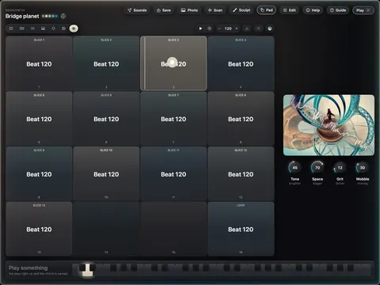
- In the Sample Editor's slices card, tap By onsets: a marker at every hit. The slider beside it sets how sensitive. Or Grid 8 or Grid 16 to cut evenly; Whole takes the cuts away.
- Tap a slice to hear it. Drag a marker to move it, double-tap to split, hold a marker to join.
- In the bank, tap Fill pads from the slices, or Whole sample → slot for one pad.
- Tap Done, choose Samples, and play. Land higher on a pad for louder.
Related: every Sample Editor control · the Loops grid
Use it in GarageBand on a Mac#
When you want to record RedSynth Pad into a song.

- Open the RedSynth Pad app once. That tells the Mac the plugin exists. If GarageBand was open, quit it and open it again.
- In GarageBand, make a project with a Software Instrument track.
- Open Smart Controls (B) and click the instrument slot in the plug-in area.
- Choose AU Instruments › RedSynth › RedSynth Pad. Click its name to open the panel.
- Give it a photo (Photo, or drop one on the panel) and play. Pad shows the pad.
What the song keeps
The sound, every control, and the photo or the photos of a space are saved inside the project, so the song opens with its instrument.
Record a knob's movement
Use the track's automation. The four knobs, Scan (the line), Scan Direction and the space's loop are all parameters.
Related: Use it in GarageBand (a recipe) · automation · GarageBand doesn't list it
Other music apps, iPhone and iPad#
When you use a different music app, or GarageBand on an iPhone or iPad.
- RedSynth Pad is a standard Audio Unit (AUv3) instrument. Apps that host Audio Unit instruments on iPhone, iPad and Mac list it as RedSynth Pad by RedSynth. In GarageBand on an iPhone or iPad, look under Audio Unit Extensions when you choose an instrument.
- So far it has been tried in GarageBand on a Mac. Other music apps, and GarageBand on iPhone and iPad, haven't been tried yet. If you try one, tell Seth how it went.
- Apps that only load VST or CLAP plugins can't load it.
Related: other music apps · limits inside a music app
Where your photos and sounds are kept#
When you want to know what happens to your pictures.
- On your device, only. Photo sounds (the newest 24), My sounds, loops and samples stay in the app's own storage. There's no account, and the app has no network access: it never sends anything anywhere, and it collects no data.
- Photos: on iPhone and iPad the system's picker hands the app only the photo you choose, never your library.
- In a music app the photo is saved inside that song's project, and goes wherever the project goes.
- A sound file you send carries its photos. See Send a sound.
- The microphone is used only when you record a sample, after your device asks you.
- Deleting the app deletes what's stored in it. Send yourself anything you want to keep first.
Related: the privacy policy · where your things are kept
iPhone, iPad, Mac and a new device#
When you want RedSynth Pad on another device, or you're moving to a new one.
- One purchase, all three. RedSynth Pad is $9.99 once, for iPhone, iPad and Mac with the same Apple Account, Audio Unit included, with Family Sharing. No subscription, no in-app purchases.
- A new device: sign in with the same Apple Account and download it from the App Store again, at no charge.
- Your sounds don't sync between devices. Move one with Send this sound… (AirDrop it to yourself).
- What it runs on: iOS 18 or later, iPadOS 18 or later, or a Mac with Apple silicon and macOS 15 or later.
Related: what you need · what's different on each device
FAQ#
Do I pay again for the iPhone, iPad or Mac?
No. One purchase covers all three and the Audio Unit, with the same Apple Account. Family Sharing works.
Do I pay again on a new device?
No. Download it again from the App Store with the same Apple Account. Your sounds stay on the old device until you send them over.
Is there a subscription?
No subscription and no in-app purchases. $9.99, once.
Does it use AI?
No. The photo is measured on your device (its repeating patterns, its colours, its light, its edges) and those numbers set the instrument. No model, nothing uploaded, nothing learned from your photos.
Where do my photos go?
Nowhere. They stay on your device. In a music app a photo is saved in that song's project, and a sound file you send carries its photos. See Where things are kept.
Does it need the internet?
No. The app has no network access at all. You need the App Store only to download it.
Why does the same photo always sound the same?
Nothing is random. Every pixel feeds a signature that sets the fine details, so the same file always makes the same instrument. A different photo, even of the same scene, makes a different one.
Can I use my sounds in songs I release or sell?
Yes. What you play and record is yours. If you use a photo you didn't take, the photo's own rights still apply to it.
Do I need to know music theory?
No. Set the scale to Major pentatonic and every note fits; Chords mode only offers chords that belong together. The strip names what you played.
Do I need a MIDI keyboard?
No. Everything plays by touch, and on a Mac by the trackpad. A keyboard is welcome if you have one.
Why does a new photo start as Strike, not Scan?
Strike makes the most of a photo on the first try: an object that rings and sings. Scan is where the line chooses the sound, so the Line panel offers Switch to Scan. See Scan, Strike or Space.
How many photo sounds does it keep?
Your newest 24, under Your photos. Save any you want to keep for good in My sounds.
Can I record what I play as audio?
In the app you record loops of notes. To record audio into a song, load RedSynth Pad in GarageBand or another music app and record there.
Which music apps can load it?
Apps that host Audio Unit (AUv3) instruments. It has been tried in GarageBand on a Mac; others haven't been tried yet. There's no VST, CLAP or Windows version.
Does it run on an Intel Mac?
No: a Mac with Apple silicon and macOS 15 or later.
Can a friend without the app open my sound file?
No, they need RedSynth Pad. Once they have it, a tap on the file opens the sound and adds it to their My sounds.
More questions are answered in Fixes, questions, words.
Fixes: when something's wrong#
No sound?
- Is the volume up, and the iPhone or iPad's silent mode off?
- Are Bluetooth headphones connected but in their case? They swallow the sound.
- Do keys light up on the strip (or fingers glow on the pad) when you play? If they light but you hear nothing, it's the output. If nothing lights, your touches aren't arriving: on a Mac, see the trackpad below.
- Is it a slow-swelling sound, or Ladder bass played high? Hold the note, play lower, or pick another sound.
The Mac trackpad doesn't play
The pointer must be over the pad, and the window in front. Press Hold the pointer (⌘⇧T) so it stays there; Esc frees it. If the on-screen keyboard is showing, press ⌘⇧K.
A note won't stop
All Notes Off (⌘., or Play › All Notes Off on a Mac) stops everything, loops included. Changing the pad's mode ends held notes too. A long echo fades by itself: turn Space down.
Notes sound late
Bluetooth headphones add a delay you can feel. Play on the speakers or wired headphones.
The space takes a while
After you add a second or third photo, the line says Making the space… for a few seconds while the app works out the tones of the block the photos make. Wait for the arrival. In Sculpt, the block's tones are worked out again each time you lift the brush: about a second on an M4 Mac.
Moving the line doesn't change the sound
The line chooses the sound only when the photo plays as Scan, and a new photo starts as Strike. Open the Line panel and tap Switch to Scan, or choose Scan from the How the photo plays button.
My drum loop recorded nothing
Record went into a notes loop, which doesn't take the drums. In the Loop Editor tap New › under Drums, a length, then Done, and record again. See Record a beat.
I recorded a loop but can't hear it
A finished take isn't on the grid yet. Open the Loop Editor, tap Assign to a cell (Cell on an iPhone), pick a column, Done, and tap that cell in Loops.
The Pad colours panel is cut off
On an iPhone held sideways the panel can be taller than the screen. Turn the phone upright while you choose.
GarageBand doesn't list it
- Open the RedSynth Pad app once.
- Quit GarageBand completely and open it again.
- On a Mac, check GarageBand › Settings › Audio/MIDI › Enable Audio Units.
- Still missing: restart the device, then write to Seth.
My samples or loops aren't in the plugin
In version 1.0 the plugin can't see the samples and loops you made in the app. Play them in the app.
A photo won't load
PNG, JPEG and HEIC work. RAW files, PDFs, videos and the motion of a Live Photo don't: export or screenshot the picture first.
It stutters
Close other heavy apps. Strike, Space and big unison sounds do the most work: fewer notes at once helps. In a music app, raise its buffer size.
Contact and bug reports#
Email redthoroughbreds@gmail.com. You'll hear back from Seth, who makes the app.
A good bug report says:
- What you tapped, step by step, from a place anyone could start (for example: "Loops, then record, then Drums").
- What you expected to happen.
- What happened instead: what you saw or heard.
- A screenshot, or a short screen recording.
- Your iPhone, iPad or Mac and its system version, and the app's version (About: the … menu on an iPhone, the small "i" on an iPad, the app menu on a Mac). In a music app, say which one.
Related: Support · Fixes, questions, words